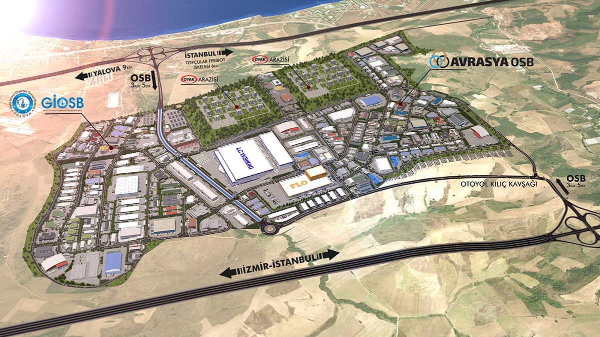
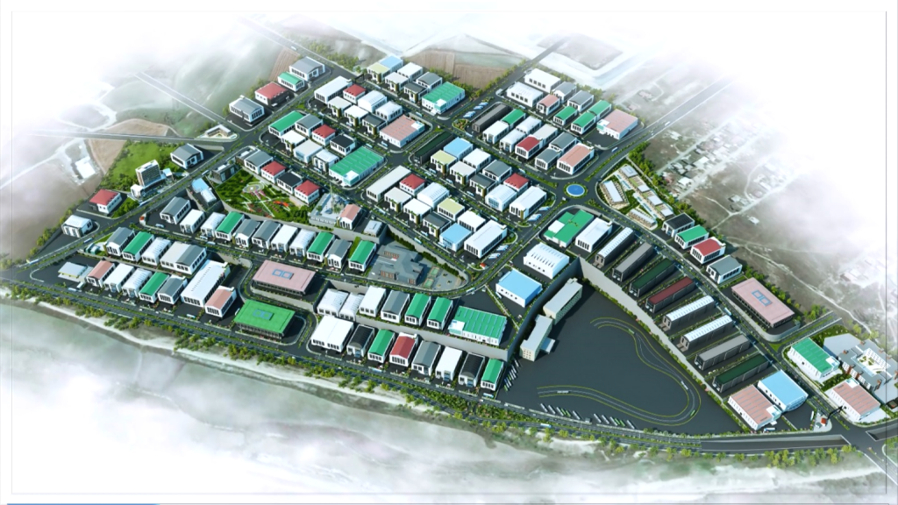
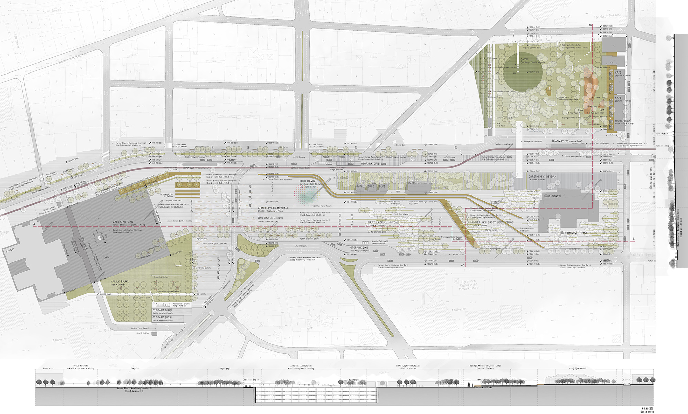
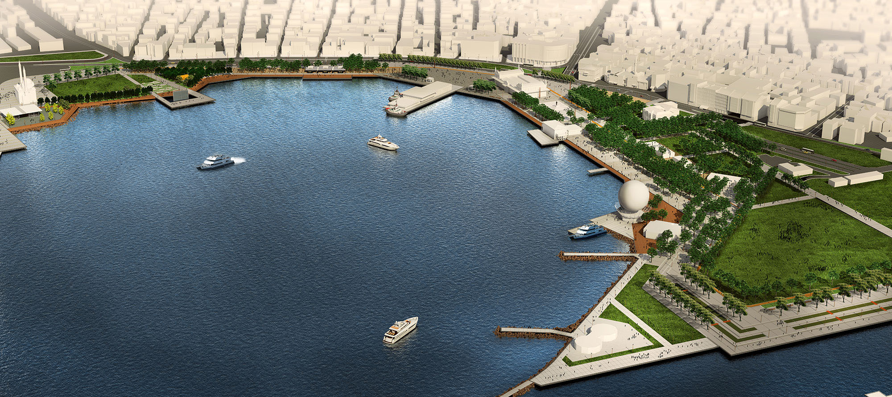
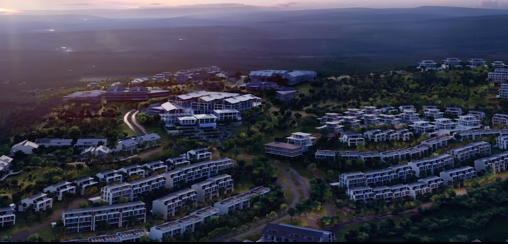
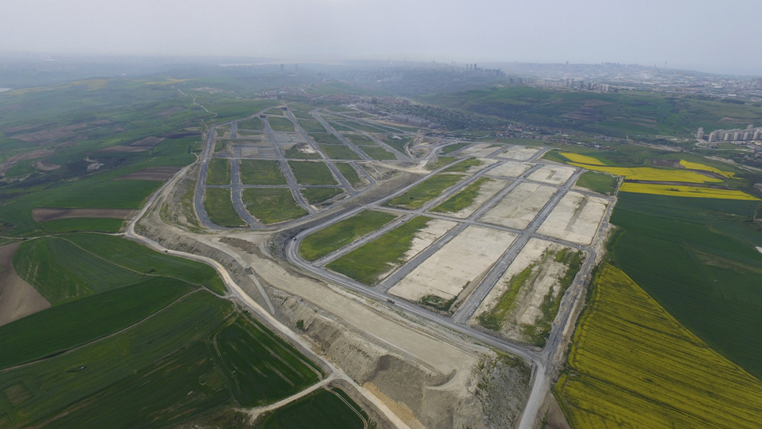
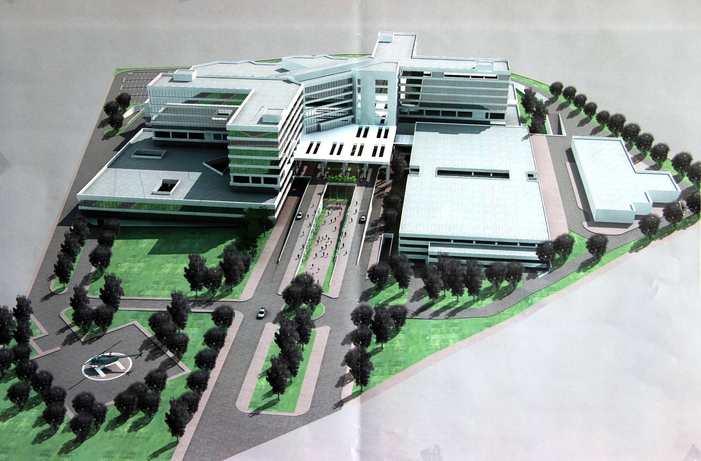
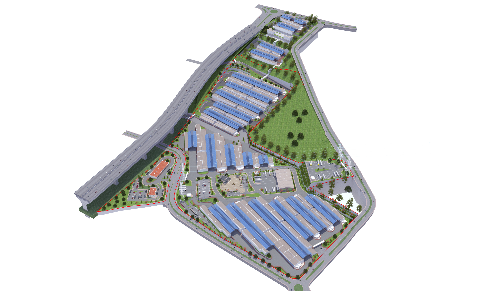

Lojistik
Sanayi Alanları
Toprak İşleri
Yalova Avrasya OSB
300 hektarlık entegre sanayi bölgesi için yol, altyapı ve lojistik planlama.
Danışmanlık, kentsel tasarım, lojistik, sanayi ve yol projelerinden seçilen çalışmalar.

300 hektarlık entegre sanayi bölgesi için yol, altyapı ve lojistik planlama.

100 hektarlık sanayi master planında ulaşım ve galeri altyapısı danışmanlığı.

Birincilik ödüllü yarışma projesinde şehir içi ulaşım kurgusu ve raporu.

40'tan fazla cadde ve meydanda uygulama projeleri, UTK süreçleri ve danışmanlık.

467 bin m² yerleşimde yol planlaması, ağaç röleveleri ve otopark optimizasyonu.

2,6 milyon m²’lik sahada toprak işleri optimizasyonu ve yol uygulama projeleri.

Şehir hastanesi erişim planlaması, ulaşım raporu ve otopark senaryoları.

400 bin m²’lik lojistik alanında etap etap yol ve toprak işleri tasarımı.